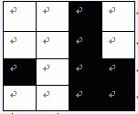
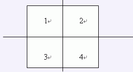

探险机器人在 Samuel 星球发现了一片广阔的矿藏区。在这个矿藏区中，有高耸的山峰，也有平坦的平地。为了方便考察，整个矿藏区被划分 $2^K \times 2^K$ 个格子区域。
例如下图，就是一个 $K=2$ 即 $ 4\times 4$ 的矿藏区：

其中黑色表示山峰，白色表示平地。
探险空间站已经将这片矿藏区的详细信息扫描并记录下来。由于矿藏区的面积实在太大，所以科学家们采用了一种特殊的编码方式记录。
(1) 如果这片矿藏区全部是平地，则编码为 $0$
(2) 如果这片矿藏区全部是山峰， 则编码为 $1$
(3) 否则，将矿藏区均匀划分成 $4$ 份，如下图所示：

 Comet OJ
Comet OJ